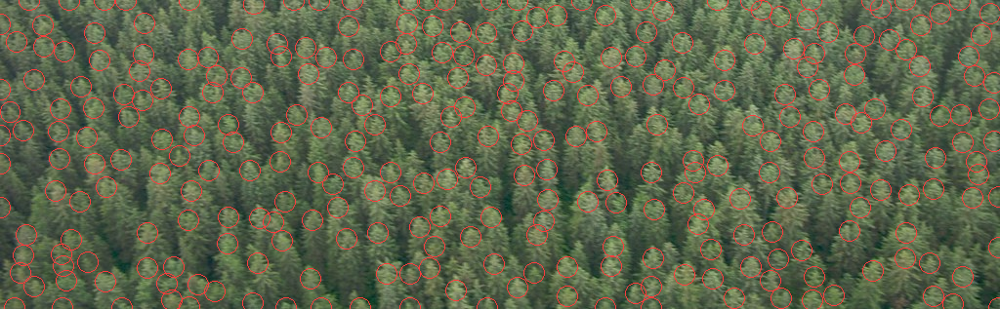
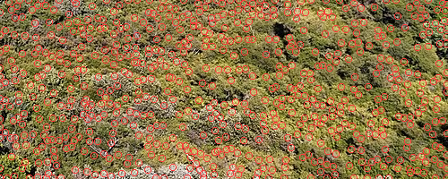

How-to 1: Look at a photo at its pixel size, and measure it
Back to the field guide. Code: ~/work/pixelart-studies/aerial/measure_photos.py, measure_haze.py, lib/study.py.
Everything else in this guide depends on this page. A photograph has vastly more pixels than your frame, so looking at it at full size shows you things you can never paint. Measuring it at full size gives you numbers about the wrong image. So always do two things: shrink the photo to the pixel size it will have, and draw what your measuring tool found back onto the photo before you believe the number.
Step 1: Find photos from the right angle
The brief's iso camera looks 30° down. Straight-down map tiles are the wrong evidence: from overhead a conifer is a dot, but from 30° it's a spire. The photos that taught me the most were drone and aircraft obliques where one subject runs from near to far in a single frame: Deer Mountain at dawn (dense conifers), the Cosumnes River from a drone (the same river from under the drone to the horizon), a Sawtooth cirque from a plane, and a Blue Ridge high oblique for haze.
Queries that worked on Openverse: aerial view forested mountain slope, drone forest canopy oblique, drone river meadow valley, glacial cirque tarn aerial, talus cone aerial, aerial view mountain range haze, drone rocky coast forest, aerial village clearing forest. Commons throttled me with HTTP 429 within minutes, so after that I used --src openverse only. Expect about half of each contact sheet to be useless, and look at all of it anyway.
Step 2: Shrink it to your frame's pixel size
def px_photo(path, box, out_w):
"""crop a photo and box-downsample so it is out_w pixels wide (what it looks like at that scale)."""
im = Image.open(path).convert("RGB").crop(box)
w, h = im.size
return im.resize((out_w, max(1, round(h * out_w / w))), Image.BOX)
Use Image.BOX, an honest area average, not a sharpening filter. Choose box and out_w so that the photo's crowns (or river, or huts) come out the same size in pixels as yours. For the canopy study I measured the crowns at full resolution (~38 px on Deer Mountain's near forest), and chose the crop so that they came out ~10 px, the size my sprites would be.

The same near forest at full size, 100 px and 50 px wide. At the smallest size each tree is a lit dab over a dark notch, which is already Ferrari's conifer mark.

Two canopies at 160, 80 and 40 px. What this shows is that a forest from above is lit caps with narrow dark seams, not dark masses with lit dots. It changed my conifer sprite.
Every study I made has this downsampled photo as its first panel, at the same scale as my pixels, with the nearest Ferrari crop beside it (study.panel). That's the comparison that tells you whether something reads.
Step 3: Tones by box
For colours and values, a hand-placed box on the photo and three numbers are enough: median L*, p10/p90, and median chroma and hue.
def tone_stats(im, box):
Lab = rgb2lab(np.asarray(im.crop(box), float)[..., :3] / 255.0)
C = np.hypot(Lab[..., 1], Lab[..., 2])
hue = np.degrees(np.arctan2(np.median(Lab[..., 2]), np.median(Lab[..., 1])))
return dict(L_med=float(np.median(Lab[..., 0])), L_p10=..., L_p90=..., chroma_med=float(np.median(C)), hue_deg=hue % 360)
The boxes that mattered, and what they gave:
- Cosumnes river: near (steeply below the drone) L* 23, C* 3; mid L* 45, C* 32, hue 276°. So water from above is a dark mirror that turns into sky toward the horizon (how-to 3).
- Sawtooth: lit granite 85 (hue 67°, warm), shaded granite 51 (hue 245°, blue), shaded snow 76, tarn 46. So rock's two families take two different hues, and shaded snow stays far above shaded rock (how-to 5).
- Albedos: the median RGB of each material box became the material's albedo in
pal.py, before the chroma push.
Step 4: Crowns, at the dominant scale
I wanted crown size, spacing, the lit share, and how much contrast sits inside one crown.
The trap. I first used skimage.feature.blob_log. It said every canopy had a crown radius of 2.12 px: dawn conifers, overcast conifers, sunlit oaks, a far slope. 2.12 is 1.5 × √2, my min_sigma. The detector always answers with its smallest scale on textured images, because at that scale leaf texture and JPEG noise respond strongest. That number described my tool, not the forest.
The fix: find the scale where the scale-normalised Laplacian energy of bright blobs peaks, then take local maxima at that scale.
Lab = lab_of(im.crop(box)); L = ndi.gaussian_filter(Lab[..., 0], 1.0)
Ln = (L - L.min()) / (np.ptp(L) + 1e-9)
sig = np.geomspace(1.5, 30, 28)
en = [np.mean(np.clip(-(s_ ** 2) * ndi.gaussian_laplace(Ln, s_), 0, None)) for s_ in sig] # bright blobs only
s_dom = float(sig[int(np.argmax(en))])
sm = ndi.gaussian_filter(Ln, s_dom * 0.7)
pk = peak_local_max(sm, min_distance=max(1, int(s_dom)), threshold_rel=0.0, exclude_border=False)
r = s_dom * np.sqrt(2) # lit-cap radius
nn = cKDTree(pk).query(pk, k=2)[0][:, 1] # spacing: nearest neighbour
Then, the part you must not skip: draw the circles on the photo and look.

The detected crowns on the Alsek stand. The circles sit on the lit caps, one per crown. Only after seeing this did I trust the spacing numbers.

The same on sunlit broadleaf (Cosumnes). Here the dominant bright blob is a leaf mass within a crown, not the crown. That's a real fact about broadleaf canopy (clumps of clumps), and it's why my broadleaf sprite is a cluster of domes.
The other crown statistics are simple:
- lit share: the fraction of the high-passed canopy above the midpoint of its p10 and p90;
- inside-the-crown contrast: L* p85 vs p10;
- taller ÷ wider: the high-pass autocorrelation length along y over x.
| canopy | spacing ÷ radius | lit share | L* lit vs gap | y/x |
|---|---|---|---|---|
| conifer, dawn, near | 2.44 | 0.35 | 19 vs 1 | 1.38 |
| conifer, overcast, near | 2.40 | 0.51 | 53 vs 30 | 1.50 |
| conifer, overcast, far | 2.33 | 0.56 | 60 vs 46 | 1.25 |
| broadleaf, sun, near | 2.31 | 0.55 | 70 vs 24 | 0.60 |
| sparse conifer on meadow | 2.89 | 0.52 | 66 vs 13 | 0.73 |
A statistic that told me nothing. I also measured where the darkest 20% of pixels sit relative to each crown centre, expecting to find the shade side. The offsets were within ±0.2 radii and pointed in no consistent direction. Report those too, and then stop using them.
Use the same tool on your own pixels. Running crown_stats on my forest plates gave spacing ÷ radius 2.2–2.5, lit share 0.54–0.56, and y/x 1.44–1.75. So my stands are inside the photo range on the first two and ~15% too tall on the third. The later far-painting lane in voxsim fixed a milky forest with exactly this check: they brought its lit-tree share inside the 0.35–0.56 range.
Step 5: Haze, row by row
For a high oblique, the rows of the image are distance: near at the bottom, far at the top. Take eight bands of rows and record the land's median L*, its dark end (p5, the black point), p95 and b*:
im = np.asarray(Image.open(f).convert("RGB").resize((320, 240)), float) / 255
lab = rgb2lab(im)
for fr in np.linspace(top, bot - 0.02, 8):
b = lab[int(fr * h):int(fr * h) + 6]
L = b[..., 0].ravel()
row = dict(L_med=np.median(L), L_p5=np.percentile(L, 5), L_p95=np.percentile(L, 95), b=np.median(b[..., 2]))
On Blue Ridge, from near to far: the black point goes 0.5 → 48, the range (p95 − p5) 45 → 9, and b* 0 → −14. Far land is two close, lifted, blue values. That's the whole rule for how-to 4.
Two of my three haze photos were unusable, and the numbers said so before I'd noticed why. One (Newfoundland) was mostly cloud: its median L* is 80+ in every row. The other's filename contained the word "Dehaze". Read the filename, and look at the photo, before you measure it.